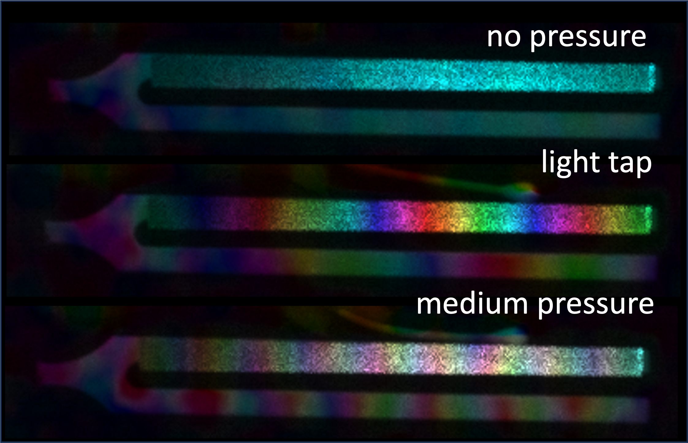
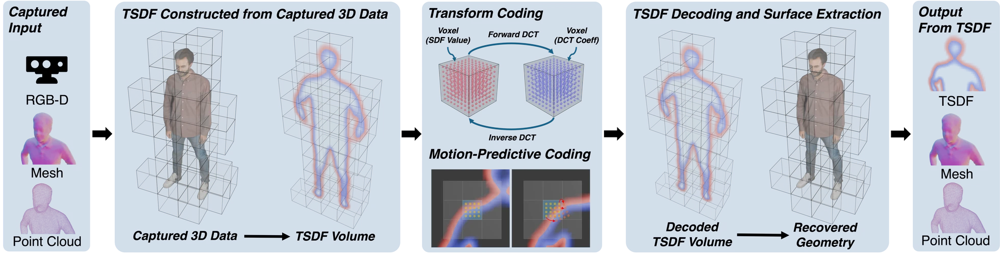
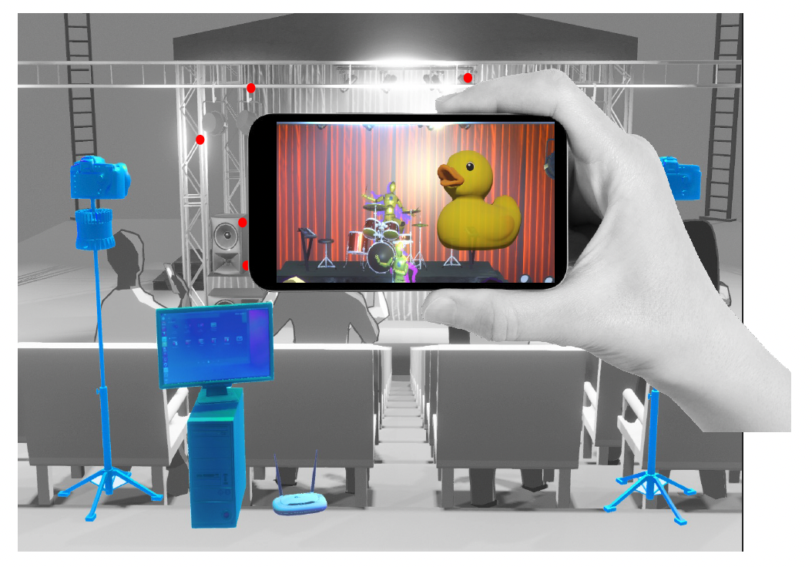

Shengxi Wu
CMU RI. Carnegie Mellon University. shengxiw@andrew.cmu.edu

About Me
I’m a Master’s student in Robotics at Carnegie Mellon University, where I am fortunate to be advised by Prof. Matthew O’Toole.
I received my Bachelor of Science in Electrical and Computer Engineering and Computer Science, also from Carnegie Mellon University, during which I had the honour to work with Prof. Anthony Rowe before joining my current lab. I have also previously worked as a research engineer intern at Adobe Research.
My research interest lies in computational photography, with prior experience in real-time AR/VR systems.
Publications

Computational Speckle Pattern Interferometry
Shengxi Wu, Sophia Yang, Dorian Chan, Matthew O’Toole
IEEE/CVF Conference on Computer Vision and Pattern Recognition (CVPR), 2026
Awarded “Best Demo”, CVPR 2026
PDF | Supplemental | Website | Code

Implicit Surface Compression — with Good Old Discrete Cosine Transform and Motion Compensation
Tao Jin, Shengxi Wu, Tianshu Huang, Mallesham Dasari, Srinivasan Seshan, Anthony Rowe
ACM Transactions on Graphics (SIGGRAPH), 2026
PDF

StageAR: Markerless Mobile Phone Localization for AR in Live Events
Tao Jin, Shengxi Wu, Mallesham Dasari, Kittipat Apicharttrisorn, Anthony Rowe
IEEE Conference on Virtual Reality and 3D User Interfaces (VR), 2024
PDF
Teaching
Teaching Assistant, 18-463/663/862: Computational Photography, Carnegie Mellon University (Fall 2026)
Teaching Assistant, 18-453/653: Intro to XR Systems, Carnegie Mellon University (Fall 2025)
Teaching Assistant, 15-414/614: Bug Catching: Automated Program Verification and Testing, Carnegie Mellon University (Spring 2025)
Teaching Assistant, 15-473/673: Visual Computing Systems, Carnegie Mellon University (Fall 2024)
Teaching Assistant, 21-259: Calculus in Three Dimensions, Carnegie Mellon University (Fall 2022)
Photography
I share photography on Instagram: @ix.na_i.